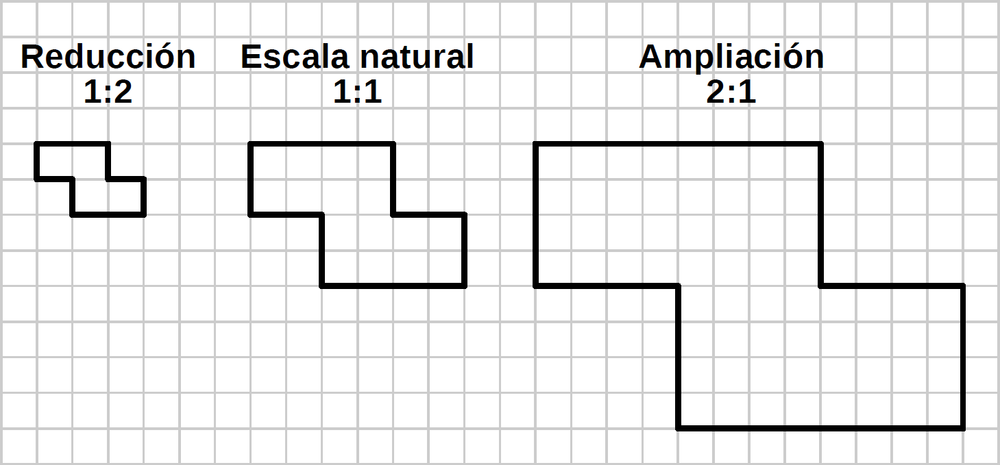

Escalas¶
Representación de objetos a distintos tamaños.
{kind=link}
Cuando hay que representar un objeto grande en un plano, por ejemplo una casa, no es práctico dibujarlo con su tamaño real. En estos casos lo conveniente es dibujar el objeto a tamaño reducido. Si los objetos son demasiado pequeños, por ejemplo un componente electrónico, es conveniente realizar el dibujo con un tamaño ampliado.
La escala es la relación de ampliación o de reducción con la que se dibuja un objeto.
La escala de reducción se utiliza cuando el tamaño del objeto es mayor que el tamaño de la hoja de papel. Una escala 1:10 significa que el dibujo tendrá un tamaño diez veces menor que el objeto real. Por ejemplo, un armario de 200cm dibujado a escala 1:10 tendrá un tamaño de 20cm en la hoja de papel.
La escala de ampliación se utiliza para representar objetos pequeños. Una escala de ampliación 10:1 servirá para representar un engranaje de reloj de 5 milímetros, con un tamaño de 50 milímetros en el papel.
La escala natural se utiliza para representar los objetos con un dibujo del mismo tamaño que la realidad. La escala natural se representa también como escala 1:1
Escalas normalizadas¶
Aunque se puede utilizar cualquier valor de escala, en la práctica se recomienda utilizar ciertos valores normalizados en los planos técnicos para facilitar la lectura de las dimensiones. Estas son las escalas normalizadas:
Reducción |
1:2 |
1:5 |
1:10 |
1:20 |
1:50 |
1:100 |
1:200 |
1:500 |
Ampliación |
2:1 |
5:1 |
10:1 |
20:1 |
50:1 |
En casos especiales, como en la construcción de edificios, se utilizan escalas intermedias como la escala 1:40 o la escala 1:25.
En la siguiente tabla aparecen algunos ejemplos de escalas y el tamaño de los objetos que se pueden representar en esa escala sobre una hoja de papel de tamaño folio o A4.
Escala |
Tamaño que se puede representar en un folio
Ejemplo de objetos
|
|---|---|
1:100 |
Hasta 25 x 15 metros en un folio
Casa, camión, salón grande
|
1:20 |
Hasta 5 x 3 metros en un folio
Estantería, armario, automóvil, habitación
|
1:10 |
Hasta 250 x 150 centímetros en un folio
Bicicleta, televisor, silla
|
1:2 |
Hasta 50 x 30 centímetros en un folio
Consola de videojuegos, botella, sierra
|
1:1 (Natural) |
Hasta 25 x 15 centímetros en un folio
Destornillador, tablet
|
2:1 |
Hasta 12 x 7 centímetros en un folio
Smartphone, tornillo
|
10:1 |
Hasta 25 x 15 milímetros en un folio
Piezas de reloj, memoria micro SD
|
Ejercicios de escalas¶
Este ejercicio consiste en copiar las figuras en un papel cuadriculado con el mismo tamaño que aparece en la lámina. A continuación la figura se copiará con una escala de ampliación 2:1, al doble de su tamaño. Por último la figura se debe copiar con una escala de reducción 1:2, a la mitad de su tamaño.
La primera lámina contiene figuras sencillas, formadas solo con líneas verticales y líneas horizontales. La segunda lámina contiene figuras con líneas verticales y horizontales, figuras con líneas inclinadas y figuras con círculos.
Láminas con figuras para dibujar a escala.

|

|